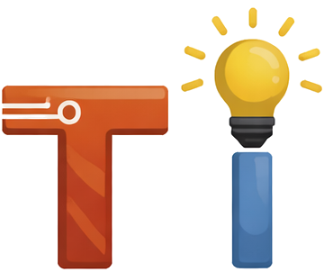
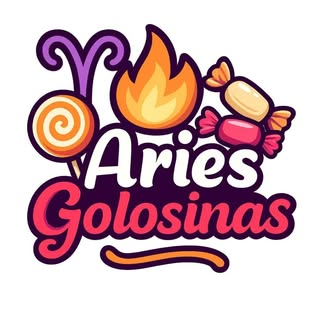

Software a medida
Aplicaciones web, plataformas internas, paneles de gestión y sistemas orientados a negocio. Aceleramos el desarrollo de software haciendo uso de IA, con criterio técnico y foco en resultados reales.

Consultora IT + laboratorio de ideas
En Tecnoideas unimos ingeniería, diseño y prototipado rápido para crear software, automatizaciones, sistemas y productos tecnológicos atractivos, útiles y listos para crecer.

Nosotros
Tecnoideas nace para transformar ideas tecnológicas en resultados concretos. Trabajamos con empresas que necesitan construir o mejorar sus plataformas digitales, y al mismo tiempo desarrollamos pequeños productos tecnológicos experimentales que expresan nuestra forma de pensar.
Ese cruce entre consultoría profesional y exploración creativa nos permite diseñar soluciones prácticas, inteligentes y con identidad propia. Promovemos el desarrollo de Software Libre como pilar de la innovación tecnológica abierta, colaborativa y accesible.
Qué hacemos
Desde diseño de software hasta automatización y consultoría, abordamos proyectos con foco en impacto, escalabilidad y experiencia de uso.
Aplicaciones web, plataformas internas, paneles de gestión y sistemas orientados a negocio. Aceleramos el desarrollo de software haciendo uso de IA, con criterio técnico y foco en resultados reales.
Procesos más simples, menos tareas manuales y conexión entre herramientas, datos y equipos.
Definición técnica, roadmap, validación de ideas, mejora de procesos y acompañamiento estratégico.
Prototipos rápidos, experiencia de usuario clara e iteración temprana para decidir mejor.
Experiencias
Este espacio puede crecer con más casos, pero ya refleja el tipo de proyectos que acompañamos y el valor que aportamos en cada etapa.
Radio comunitaria de rock y cultura alternativa, FM 88.1 MHZ. Desarrollo de plataforma streaming, reproductor de audio, gestión de programación en vivo y aplicación móvil.
Plataforma de streaming en vivo, contenido on-demand, archivo de programas especiales y noticias. Transcodificación de video, reproductor adaptativo y experiencia multiplataforma (web, mobile, smart TV).
Productora audiovisual integral especializada en creación de contenidos multimedia profesionales. Soluciones completas que abarcan radiodifusión, streaming de audio y video, desarrollo de plataformas digitales, y distribución de contenidos.

Plataforma integral de inventario para venta mayorista y minorista de golosinas. Sistema de carrito de compras, gestión de stock y envío de pedidos automáticos por WhatsApp.
La sección está preparada para sumar nuevos clientes, experiencias, resultados y lanzamientos propios.
Contacto
Podemos ayudarte a diseñar un sistema, automatizar procesos, validar un producto o desarrollar una solución digital con criterio técnico y mirada creativa, con foco en calidad, negocio y escalabilidad.